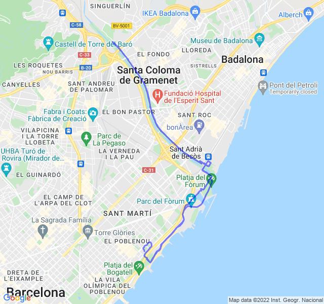

3x5000 rec 1000
| 1 min read
Nubi sparse, 14°C, Percepito 14°C, Umidità 75%, Vento 7m/s da ENE
Allenamento recuperato da venerdì. Fortunatamente il vento è un po' calato e ho potuto farlo senza troppi problemi.
Sono soddisfatto del risultato, ho tenuto i passi che erano previsti con un pochino di margine. Certo, la velocità non è quella di un anno fa ma per il momento va bene così!
